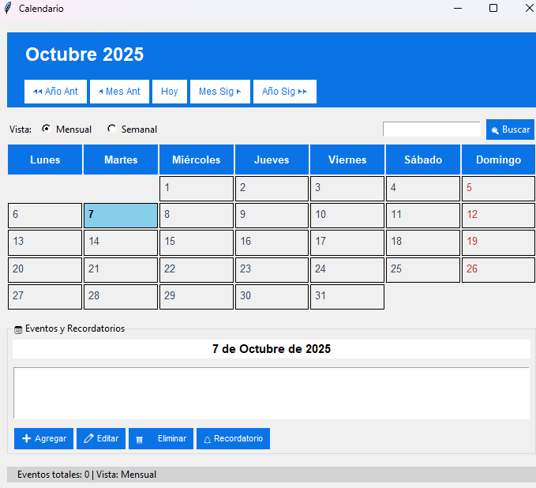
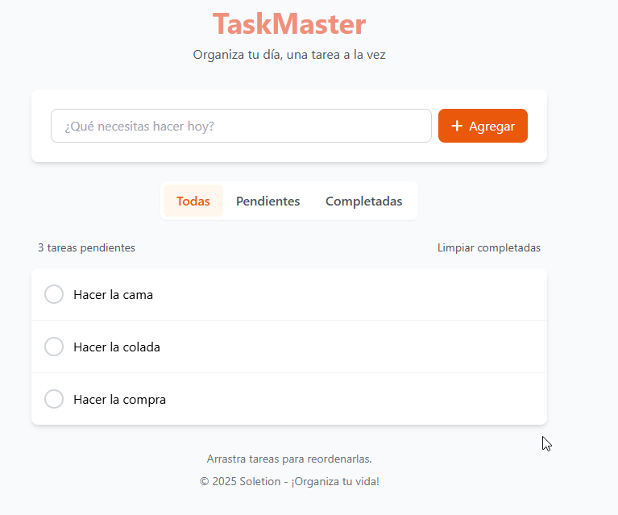
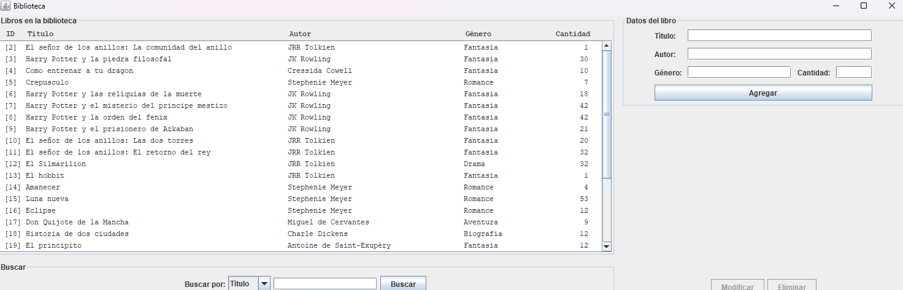

Natasha Solange
Desarrolladora web junior apasionada por crear experiencias digitales funcionales, accesibles y con un diseño cuidado. Especializada en frontend y en constante aprendizaje.
Sobre mí
Recién graduada en Desarrollo de Aplicaciones Web (DAW) con ganas de empezar mi carrera profesional.
Durante mi formación he desarrollado múltiples proyectos académicos que puedes ver en mi GitHub. Mi enfoque combina diseño funcional, buenas prácticas y aprendizaje continuo.
Actualmente busco mi primera oportunidad como desarrolladora junior donde pueda aportar mis conocimientos en React, PHP, Java y otras tecnologías, mientras sigo creciendo profesionalmente.
Habilidades técnicas
Frontend
Backend & DB
DevOps & Herramientas
Actualmente aprendiendo
React avanzado
Profundizando en hooks, contexto, rutas y optimización de rendimiento.
AWS
Servicios en la nube: EC2, S3, despliegue de aplicaciones.
Docker
Contenerización de aplicaciones y entornos de desarrollo.
Integración de IA
APIs de IA, asistentes y automatización inteligente.
API REST
Diseño y consumo de APIs RESTful, autenticación, documentación con Swagger.
Proyectos destacados
+12 repositorios públicos en GitHub. Estos son algunos de mis proyectos académicos.

Calendario interactivo
Proyecto académico: calendario con gestión de eventos y persistencia local.


Trayectoria
Búsqueda activa de empleo
Junior Web Developer
Finalizada la formación, busco mi primera oportunidad como desarrolladora junior.
Prácticas profesionales
Desarrollo WordPress (PHP)
Desarrollo de un tema personalizado en PHP para una academia de oposiciones.
Grado Superior DAW
Formación Profesional Oficial
Título de Técnico Superior en Desarrollo de Aplicaciones Web.